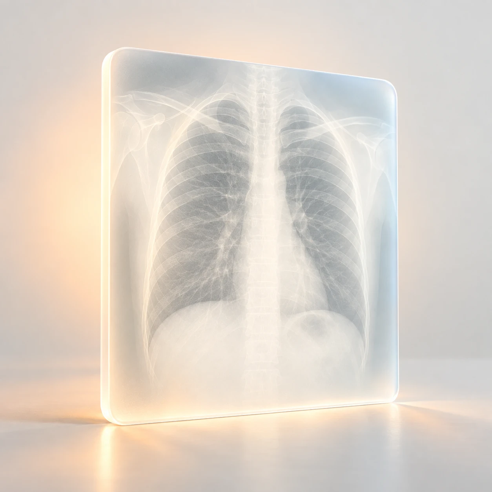

Каждому
снимку —проверка
качества.
Денсио — концепция ИИ-сервиса, который проверяет качество денситометрии и разметку до оценки врачом.
Запросить пилотЗа вердиктом
стоят детали.
Как выполнена укладка.
Что попало в область сканирования.
Где проходит разметка.
Это примеры того, что важно проверить в исследовании. Контроль качества съёмки не заменяет оценку врача.
Из файла —
в понятный
вердикт.
Исследование, проверка, результат. На выходе — отметка качества или тип нарушения.
Прокрутите, чтобы пройти три этапа.
Загрузка исследования
Пример интерфейсаФайл поступает на проверку.
Проверка снимка
Пример интерфейсаВнимание
к каждой детали.
Сопоставляем укладку, границы и разметку.
Результат проверки
Пример интерфейсаУсловные данные и примеры статусов. Реальной обработки исследований на этой странице нет.
Замечать то,
что влияет
на качество.
Примеры возможных нарушений. Конкретный перечень проверок уточняется по требованиям проекта.

Начнём с задачи
вашей клиники.
Так может выглядеть запрос на пилот. Это учебная страница: отправка заявки пока не подключена.
Демонстрационный проект по ТЗ хакатона. Не является медицинским изделием.